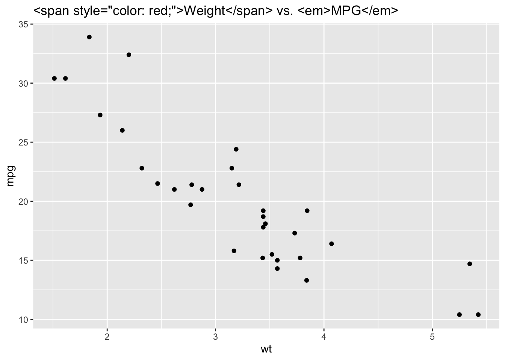

Chapter 3 ggplot2 拓展包
3.1 ggstatsplot
ggstatsplot是一个增强版的ggplot2包，专为统计分析而设计，提供了一种便捷的方式来创建包含统计测试结果的图形。这个包非常适合那些希望在数据可视化中直接集成统计分析结果的用户，从而使得数据解读更加直观和有效。在这篇教程中，我们将探讨ggstatsplot的基本用法、特色功能以及如何将其应用于数据分析中。
3.1.1 简介与安装
3.1.2 基本用法
3.1.3 特色功能

3.1.4 高级定制
3.1.4.1 修改主题和标签
ggstatsplot允许用户自定义图形的主题和标签，以适应不同的展示需求。
# 自定义主题和标签
ggscatterstats(
data = mtcars,
x = wt,
y = mpg,
title = "汽车重量与油耗的关系",
xlab = "重量",
ylab = "每加仑行驶英里数",
theme = theme_minimal()
)## `stat_bin()` using `bins = 30`. Pick better value with `binwidth`.
## `stat_bin()` using `bins = 30`. Pick better value with `binwidth`.
3.1.5 实战示例
让我们通过一个实战示例来展示如何使用ggstatsplot进行数据分析。
假设我们想要分析mtcars数据集中汽车的重量（wt）和每加仑行驶英里数（mpg）之间的关系，并考虑汽缸数（cyl）作为分组变量。
# 对每个汽缸数分组，分析重量和油耗的关系
ggbetweenstats(
data = mtcars,
x = cyl,
y = mpg,
xlab = "汽缸数",
ylab = "每加仑行驶英里数",
title = "不同汽缸数下的油耗分析",
pairwise.comparisons = TRUE,
pairwise.annotation = "p.value"
)
3.2 gghighlight
gghighlight是一个非常实用的R包，用于ggplot2图表中高亮显示特定的数据点或数据系列，使得在展示复杂数据时，观众能够迅速聚焦于关键信息。本教程将带你了解gghighlight的基本使用方法、如何高亮显示数据、以及高级定制技巧，以便你能够在数据可视化项目中更有效地使用这个工具。
3.2.1 简介与安装
3.2.2 基本使用方法

3.2.3 高亮多个系列

3.2.4 高级定制
3.2.5 实战示例
让我们通过一个实战示例来展示如何在数据分析中综合应用gghighlight。
假设我们想要分析mtcars数据集中，哪些车型在重量（wt）和每加仑行驶英里数（mpg）上表现出色。我们将创建一个散点图，并高亮显示那些重量低于平均值同时mpg高于平均值的车型。
library(ggplot2)
library(gghighlight)
# 计算平均重量和平均mpg
avg_wt <- mean(mtcars$wt)
avg_mpg <- mean(mtcars$mpg)
# 将行名添加为新列
mtcars$carname <- rownames(mtcars)
# 创建散点图并使用gghighlight高亮特定点
ggplot(mtcars, aes(x = wt, y = mpg)) +
geom_point() +
gghighlight(wt < avg_wt & mpg > avg_mpg, label_key = carname)这个例子不仅高亮了特定的车型，而且还在每个高亮点旁边添加了车型名称作为标签，使得图表的信息传达更为直观和有效。
3.3 ggpattern
ggpattern是一个为ggplot2图形添加图案填充功能的R包。它扩展了ggplot2的功能，允许用户为几何对象（如柱状图的条形、饼图的扇形、箱线图的箱体等）添加不同的图案，从而增强图形的视觉表现力和信息传达能力。这篇教程将介绍ggpattern的安装、基本使用方法、高级定制技巧，以及如何将其应用于数据可视化项目中。
3.3.2 基本使用方法
3.3.5 实战示例
让我们通过一个实战示例来展示如何在数据可视化项目中综合应用ggpattern。
假设我们需要对某个数据集进行分类展示，并希望通过不同的图案来区分各个类别。
# 使用iris数据集
ggplot(iris, aes(x = Species, y = Sepal.Length, fill = Species)) +
geom_boxplot_pattern(
aes(pattern = Species),
pattern_density = 0.1,
pattern_spacing = 0.02,
pattern_key_scale_factor = 0.8
) +
scale_fill_manual(values = c("lightblue", "lightpink", "lightgreen"))这个例子使用了箱线图来展示不同物种花萼长度的分布，并通过不同的图案和颜色区分物种。
3.4 geomtextpath
geomtextpath是一个R包，它为ggplot2提供了一种独特的功能：能够让文本沿着路径排列，这意味着你可以将文本沿着曲线或直线等图形元素渲染出来。这种功能在需要强调特定数据轨迹或在图表中添加创意注释时非常有用。本教程将引导你了解如何安装geomtextpath包、基本使用方法、以及如何通过高级定制来增强你的数据可视化作品。
3.4.2 基本使用方法
3.4.2.1 在ggplot2图形中应用geom_textpath()
geomtextpath包主要通过geom_textpath()函数工作，这个函数类似于ggplot2中的geom_text()，但允许文本沿预定义的路径排列。
library(ggplot2)
library(geomtextpath)
# 示例数据
df <- data.frame(x = 1:10, y = sin(1:10), label = "Hello World")
# 创建带有文本路径的图形
ggplot(df, aes(x = x, y = y, label = label)) +
geom_line() +
geom_textpath()
3.4.5 实战示例
让我们通过一个实战示例来演示如何在数据可视化项目中综合应用geomtextpath。
# 示例数据：时间序列
time_series <- data.frame(
time = seq.Date(from = as.Date("2020-01-01"), to = as.Date("2020-12-31"), by = "month"),
value = sin(1:12),
label = "Trend"
)
# 绘制时间序列趋势并添加文本路径注释
ggplot(time_series, aes(x = time, y = value, label = label)) +
geom_line() +
geom_textpath(vjust = -1)这个例子展示了如何在一个时间序列数据上绘制趋势线，并使用geom_textpath()在趋势线上方添加注释，强调整体趋势。
3.5 gganimate
gganimate是一个扩展了ggplot2的R包，使得创建动态可视化变得简单直接。它允许用户将ggplot2图形转换为动画，通过时间或其他变量的变化来展示数据的动态过程。本教程将指导你了解gganimate的安装、基本使用方法、如何创建动画、以及如何自定义动画以增强数据故事的表达。
3.5.1 简介与安装
3.6 ggiraph
ggiraph是一个R包，它允许你创建交互式的ggplot2图形。通过ggiraph，你可以为图形元素（如点、线、条形等）添加悬停文本、点击事件或任何形式的交互功能，这使得数据探索和呈现更加动态和互动。本教程将介绍ggiraph的安装、基本使用方法、如何添加交互性以及一些高级功能，以帮助你提升数据可视化项目的交互性。
3.6.1 简介与安装
3.6.2 基本使用方法
3.6.3 增强交互性
3.7 esquisse
esquisse是一个R包，旨在为ggplot2提供一个用户友好的图形界面，使得创建美观的数据可视化变得简单快捷。通过esquisse，用户可以通过拖放的方式选择数据、定义图形类型、调整美学设置，而无需编写任何代码。这使得esquisse成为初学者快速学习ggplot2以及专业人士加速数据探索过程的理想工具。本教程将介绍esquisse的安装、基本使用方法、功能特点以及如何将其集成到Shiny应用中。
3.7.1 简介与安装
3.7.2 启动esquisse界面
3.7.5 esquisse与Shiny集成
3.7.5.1 将esquisse嵌入Shiny应用
esquisse提供了Shiny模块，使得开发者可以轻松地将这个强大的图形创建工具嵌入到自己的Shiny应用中，增强应用的数据可视化能力。
# 示例代码，将esquisse嵌入Shiny应用
ui <- fluidPage(
esquisse::esquisserUI(id = "esquisse", height = "600px")
)
server <- function(input, output, session) {
esquisse::serverEsquisser(input, output, session, id = "esquisse")
}
shinyApp(ui, server)3.8 ggthemes
ggthemes是一个R包，提供了一系列额外的主题、比例尺和几何对象，以扩展ggplot2的功能。这使得用户可以轻松地为他们的图形添加独特的样式和外观，从而提高数据可视化的吸引力和表现力。本教程将介绍ggthemes的安装、基本使用方法、一些流行主题的应用，以及如何将这些主题和样式应用到你的ggplot2图形中。
3.8.3 流行主题介绍

3.9 ggbump
ggbump是一个R包，它扩展了ggplot2的功能，提供了一种绘制“bump chart”的方法。Bump chart是一种显示排名变化的图表，非常适合展示时间序列数据中各个类别的排名如何随时间变化。本教程将介绍ggbump的安装、基本使用方法、如何自定义图表以增强表现力，以及实战示例，帮助你有效地使用ggbump来可视化排名变化数据。
3.9.2 基本使用方法
3.9.2.1 创建第一个Bump Chart
一旦安装了ggbump，你就可以开始创建你的第一个Bump Chart。首先，确保你的数据以长格式组织，每行表示一个类别在特定时间点的排名。
library(ggplot2)
library(ggbump)
# 示例数据
df <- data.frame(
time = c(1, 1, 2, 2, 3, 3),
category = c("A", "B", "A", "B", "A", "B"),
rank = c(2, 1, 1, 2, 2, 1)
)
ggplot(df, aes(x = time, y = rank, group = category, color = category)) +
geom_bump()## Warning: Computation failed in `stat_bump()`
## Caused by error in `arrange()`:
## ! could not find function "arrange"3.9.3 自定义图表
3.9.3.1 调整线条颜色和粗细
你可以通过aes()函数中的color参数来为不同的类别指定颜色，并使用size参数来调整线条的粗细。
## Warning: Using `size` aesthetic for lines was deprecated in ggplot2 3.4.0.
## ℹ Please use `linewidth` instead.
## This warning is displayed once every 8 hours.
## Call `lifecycle::last_lifecycle_warnings()` to see where this warning was
## generated.## Warning: Computation failed in `stat_bump()`
## Caused by error in `arrange()`:
## ! could not find function "arrange"
3.9.3.2 添加点和标签
为了使图表更加信息丰富，你可以添加点来表示每个时间点的排名，并通过geom_text()添加标签来显示具体的排名或其他信息。
ggplot(df, aes(x = time, y = rank, group = category, label = rank, color = category)) +
geom_bump(size = 1.5) +
geom_point() +
geom_text(nudge_y = 0.2) # 轻微调整标签位置## Warning: Computation failed in `stat_bump()`
## Caused by error in `arrange()`:
## ! could not find function "arrange"3.10 ggtext
ggtext是一个R包，它扩展了ggplot2的功能，允许在图形的文本元素中使用HTML和CSS样式。这意味着你可以在图表的标题、轴标签、图例文本甚至是图形注释中使用富文本格式，包括不同的字体、颜色和大小，甚至可以插入图片。本教程将介绍ggtext的安装、基本使用方法、如何利用HTML和CSS样式来增强你的图形文本，以及一些实用的示例。
3.10.2 基本使用方法
3.10.2.1 应用富文本格式到图形文本
ggtext允许你在任何支持文本的ggplot2图层中使用Markdown语法或HTML标签来格式化文本。
library(ggplot2)
library(ggtext)
# 创建一个简单的图表
p <- ggplot(mtcars, aes(x = wt, y = mpg)) +
geom_point() +
labs(title = '<span style="color: red;">Weight</span> vs. <em>MPG</em>')
# 使用ggtext的element_markdown()来渲染Markdown/HTML
p + theme(plot.title = element_markdown())
3.10.3 增强文本表现力
3.10.3.1 使用HTML标签
在ggtext中，你可以使用HTML标签来为文本添加颜色、加粗、斜体、下划线等格式。
labs(title = 'This is a <span style="color: blue;">blue</span> title',
subtitle = 'This is a <strong>bold</strong> subtitle')## $title
## [1] "This is a <span style=\"color: blue;\">blue</span> title"
##
## $subtitle
## [1] "This is a <strong>bold</strong> subtitle"
##
## attr(,"class")
## [1] "labels"3.10.3.2 应用CSS样式
通过内联CSS，你可以进一步自定义文本的样式，如字体大小、边距、背景色等。
labs(caption = '<div style="background-color: #f0f0f0; padding: 5px; border-radius: 5px;">Caption with <b>style</b></div>')## $caption
## [1] "<div style=\"background-color: #f0f0f0; padding: 5px; border-radius: 5px;\">Caption with <b>style</b></div>"
##
## attr(,"class")
## [1] "labels"